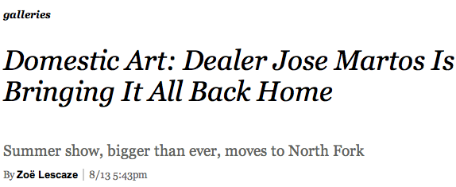
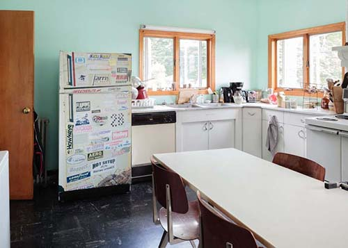

Martos’s home in East Marion. (Courtesy Martos Gallery)
On an overcast afternoon in mid-July, a teenaged punk band was performing on the roof of a garage in East Marion, N.Y., near the easternmost tip of Long Island’s North Fork, half-singing, half-screaming "When the Saints Go Marching In." The party guests, mostly artists sipping beer sourced from a keg, seemed to be enjoying the concert, if not a conventional art exhibition opening. Then again, Jose Martos, to whom the garage with the howling high schoolers belonged, isn’t a conventional art dealer.
Much of what Mr. Martos does flouts the standard operating procedure of his Chelsea peers. In a manner somewhat reminiscent of Jeffrey Deitch, he doesn’t represent artists so much as work with them, project to project, showing more emerging talent than big names and subsidizing it all with secondary market sales of established artists like Keith Haring. Then there’s Shoot The Lobster, his nomadic project space that has popped up everywhere from Milwaukee to Marseilles. (A month-long run as part of Gavin Brown’s Enterprise downtown ended last week.) That his 29th Street headquarters, Martos Gallery, lies on the outskirts of Chelsea proper feels appropriate. Mr. Martos does things differently.
Nowhere is this more apparent than at the North Fork show, where art appears in the unlikeliest corners of the house and grounds, from the linen closet to the woods lining the long driveway. "LAT. 41° 7` N., LONG. 72° 19` W.," organized by curator Bob Nickas, is the fourth exhibition Mr. Martos has held in a summer home, though it’s the first in this particular house, a spacious gray Victorian he owns with his wife, artist Servane Mary. The previous exhibitions, which were staged in a Bridgehampton, N.Y., rental, cheekily subverted white cube norms. This iteration, with 66 artists and 132 artworks, is the most ambitious yet.
"It leaves you feeling good about something after you’ve left," said artist Dave Muller, who created a wall piece in one of the upstairs bedrooms. "Like we’re all not just in this rat race fucking with each other. There’s something about that that’s nice. It reminds me that I like my peer group occasionally."
Mr. Martos and his family are living in the house throughout the summer, surrounded by art, which Mr. Nickas believes does the work as much good as it does the dealer. Art looks best, he says, when it appears alongside furniture, crying children and food cooking in the kitchen. "If you look at any collector’s house and you put that experience right next to a gallery," he said, "the gallery is a very alienating thing."
The art, which ranges from a transparent plastic sailboat floating in the bay by Aaron Suggs to candy-colored hands made of resin and attached to the tips of tree branches by Peter Coffin, reflects the freedom artists enjoy. Mr. Nickas has a reputation for allowing artists to experiment, as does Mr. Martos.
"I think he likes to do things differently than most dealers do," said Mr. Coffin. "I think he actually enjoys working with artists."
In New York’s complex art ecology, Mr. Martos, who has reached his early 50s and has long side-swept hair, a slouchy stance and a fondness for wearing flip-flops in the city, is not a high-profile player. There are dealers with galleries just a couple blocks south of his who don’t know his name. There are others he rankles by approaching the artists they represent directly, instead of through the usual channels. "He’s one of these guys who has never followed the rules of protocol as we know it in the art world," said one Chelsea dealer. None of these reactions, or non-reactions, seem to concern him. As one dealer, who was hazily aware of Mr. Martos’s operation, put it, "Sometimes it’s better to be the sleeper, behind-the-scenes guy."
Mr. Martos, who grew up in southern France, is in the art world, but he is not quite of it. His father drove trucks, his mother cleaned houses and he dropped out of school at age 12. In the 1980s, he visited a friend in St. Barts and ended up staying for five years. He opened his first gallery there, essentially to prove he could.
"I had a group of friends there, they were artists, and because I have a lack of education, they think maybe I was like an ignorant," said Mr. Martos. He was sitting in his gallery office sipping Earl Grey tea. "They kind of excluded me. 'If you don’t have the base, the education, if you don’t know your history—who’s Poussin, van Gogh, Picasso—forget it. You will never make it. You will never succeed. You will never be able to develop your brain good enough to be different and to be involved in that super-privileged art world.' And I said 'fuck it.' They pissed me off enough and I decided to open a gallery, just to show them."
He began exhibiting local artists on the island and attracted the attention of vacationers like dealer Tony Shafrazi and artist Lawrence Weiner. He moved to New York in the '90s, after doing a show with artist Richard Bernstein, and opened a gallery on Bethune Street. He then migrated to 515 Broadway, before arriving in Chelsea in 2007. He started the Hamptons shows in 2010 after Mr. Nickas mounted a small exhibition in his city apartment and he realized the value of installing art in a living space.
The day before the current show opened, a French collector and friend of Mr. Martos was searching for a vessel large enough to contain couscous for the several hundred guests they were expecting at the opening. He rummaged through the airy kitchen, passing several installations—acrylic paintings of bowls by B. Wurtz, Jim Drain’s Day-Glo banquette cushions and a Josh Tonsfeldt vinyl piece gracing the refrigerator door. He checked near Mr. Martos, who was transporting the broccoli he’d just sautéed to an outside table where Mr. Nickas and a few artists had gathered for a salad-centric luncheon. "I feel like a cow," Mr. Martos complained in his thick French accent, gazing morosely at the greens. Mr. Nickas, who is a vegetarian, shot him a look, but his attention had turned to an unfinished sculpture by Mr. Drain, involving some Wiffle bats scavenged from the local dump.
"Can you make some more commercial art?" implored Mr. Martos.
"I’m trying!" Mr. Drain returned sportingly as he adjusted a bat.
"Eet looks like a fucking deeldo"
As much as it sounded like a dig, it was something of a compliment. Aesthetically, Mr. Martos has a penchant for rough edges that was shaped years ago when he saw early, unpolished pieces by Jim Lambie at Liste, a Basel offshoot for emerging artists. At the time, the work cost only $500, which "back then for me was a lot of money," he said in his gallery office. "But I decided, yeah, I want to buy them and I want to show artists I really like and I want to support them." A stripy tape installation by Mr. Lambie currently covers the staircase in Mr. Martos’s East Marion home.
As a dealer, he isn’t interested in growing his gallery into a big business, like some of his Chelsea peers. "Oh, wow, if you spend $1 million on production, it must be good," he said of Jeff Koons, who is known for perfect fabrication. "I don’t say it’s bad, but it’s not for me now."

The kitchen, with Josh Tonsfeldt’s 'Refrigerator,' 2013. (Courtesy the artist Martos Gallery)
The North Fork is increasingly an alternative to the Hamptons for the vacationing art crowd. Still, it was impressive that hundreds of people ventured to East Marion for the opening of "LAT. 41° 7` N., LONG. 72° 19` W.," despite a downpour that drenched the outdoor work. It was sometimes hard to know what was art and what wasn’t. "I have to be careful, because Jose would sell that to someone," said Mr. Nickas, pointing to an old rope hammock wrapped around a tree.
The artist Ben Schumacher was perched on the porch with a friend.
"This is Ben Schumacher," said Mr. Martos, as he ambled up to the artist. "He did a show at my gallery once and shat his pants. Yeah, he ate Chinese food before the gallery dinner and he couldn’t make it. His pants just…" he trailed off, and then wandered off.
"Does he tell that story every time?" asked Mr. Schumacher’s friend. "Because this is like the third time I’ve heard it."
"Yeah," said Mr. Schumacher. "But it changes a little every time. Normally I’m 'making love' during the dinner."
The freewheeling spirit of the summer show is echoed in Mr. Martos’s other ongoing project, Shoot The Lobster, which began last year and has a permanent home in the back room of Martos Gallery. It travels widely. The most extreme Shoot The Lobster venture took place in Miami in May 2012, when Ryan Foerster installed work in a vacant lot far from glitzy South Beach. Prints lay on the cracked concrete and patchy grass, pinned down by rocks, roof tiles and other flotsam. Nothing was for sale.
"It was amazing, it was like a breakthrough working that way," said Mr. Foerster, who said he was skeptical when Mr. Martos pitched the idea. "He was just like, 'You know, what the fuck, let’s go to Miami; it will be funny. We’ll go in the springtime.'" The show’s timing and Arte Povera spirit seemed intended to poke fun at the spectacle of Art Basel Miami Beach. Homeless denizens of the lot attended the "opening," alongside collectors like the Rubells.
"The idea of what art is and can be down here feels kind of limited," said Mr. Drain, who lives in Miami. "For Jose to do a show in this really derelict part of town really opened people’s eyes. I think some people realized, oh, I don’t need to rent a storefront."
The next exhibition at Martos Gallery in Chelsea, a group show organized by artist and Sex magazine editor Asher Penn, opens September 12. Until about a week before that, Mr. Martos will be for the most part at his home in East Marion, manning the show and, well, just living with it. "It’s a big commitment," he said of cohabitating with an exhibition. "You live with your family, you are on vacation, you’re sitting in your kitchen and somebody walks in." Recently, that somebody was a critic from The New York Times. Mr. Martos had just emerged from the shower.
But this show may be the last of its kind. The scale, in Mr. Nickas’s view, was too much. "Sixty-six artists, 132 artworks in a gallery with a three-person staff?" he said wearily over an iced tea back in the city. Next summer may bring a solo show, or something else entirely.
"Sometimes he seems like he has a bigger imagination than some of the artists," said Virginia Overton, a veteran of the summer shows. "He’ll offer these ideas that seem completely off the wall, which seems a little like the opposite of what you’d expect from a dealer."
To read the article online click here
For images and more information on the exhibition click here
Selected Press:
BLINNK Blog
The Suffolk Times
Art in America
The New York Times
Martos Gallery summer location:
12395 Main Road, East Marion, NY
212.560.0570
www.martosgallery.com
info@martosgallery.com
Like us on Facebook
Follow us on Twitter